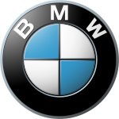

brending
BMW is an abbreviation for Bayerische Motoren Werke (German pronunciation: [ˈbaɪ̯ʁɪʃə mɔˈtʰɔʁn̩ ˈvɛɐ̯kə]). This name is grammatically incorrect (in German, compound words must not contain spaces), which is why the grammatically correct form of the name, Bayerische Motorenwerke (German pronunciation: [ˈbaɪ̯ʁɪʃə mɔˈtʰɔʁn̩vɛɐ̯kə] ⓘ) has been used in several publications and advertisements in the past.[17][18] Bayerische Motorenwerke translates into English as Bavarian Motor Works.[19] The suffix AG, short for Aktiengesellschaft, signifies an incorporated entity owned by shareholders, thus akin to "Inc." (US) or PLC, "Public Limited Company" (UK). The terms Beemer, Bimmer and Bee-em are sometimes used as slang for BMW in the English language[20][21] and are sometimes used interchangeably for cars and motorcycles.[22][23][24] Logo The circular blue and white BMW logo or roundel evolved from the circular Rapp Motorenwerke company logo, which featured a black ring bearing the company name surrounding the company logo,[25] an image of a horse head on a plinth. BMW retained Rapp's black ring inscribed with the company name, but the interior of the ring is quartered blue and white, reminiscent of the coat of arms and flag of Bavaria (which in turn are based on the arms of the historic House of Wittelsbach, which ruled Bavaria for many centuries).[25] The logo does not bear the distinctive lozenge shape found on the coat of arms, however, as local laws at the time it was introduced forbade the use of state coats of arms on commercial logos.[26]
 swipe back paje